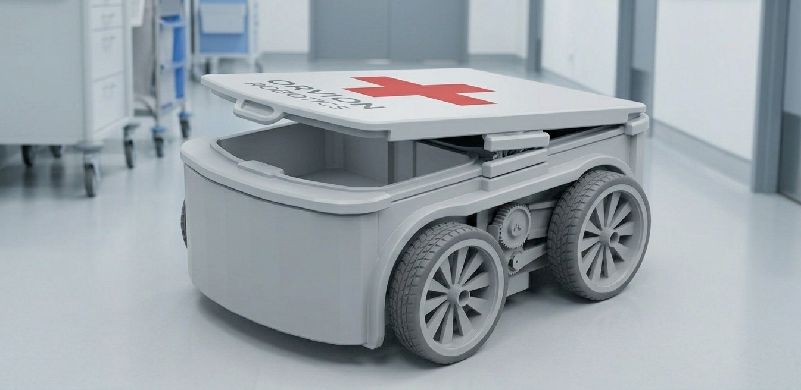

Panel de control
ROB-000
Cargando datos del rover...
Control Bluetooth
Conectá el rover por Bluetooth para iniciar el control.
Desconectado. La conexión no enviará comandos de encendido o apagado hasta configurar el protocolo BLE del rover.
Microcontrolador
ESP32
Dual-core 240MHz
Sensor principal
Infrarrojo
Seguimiento de línea
Conectividad
WiFi 802.11
2.4GHz integrado
Autonomía
12 horas
Por carga completa
